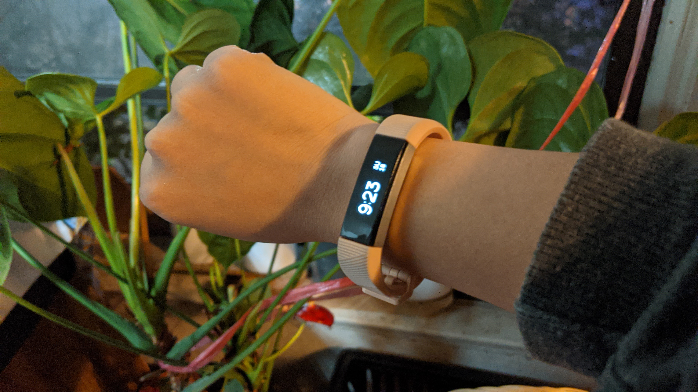

Summer of 2017, I bought a Fitbit Alta HR, a health and fitness tracker that can also work as a normal watch, during the Amazon Prime Day since I’ve been wanting a watch and was trying to get into fitness. I’ve been using it every day ever since for not only time but tracking my steps, minutes of being active, and sleep through the Fitbit app where all the data syncs to.
I became more conscious of my physical actions because I became obsessed with making the daily goals.
For the past few years, I’ve been using the alarm function, where the Fitbit vibrates, to wake me up. One of the first things I do when I wake up is to check the Fitbit app to see how many hours I slept and how I my sleep cycle was. I enjoy learning about my sleep and how long I was in each stage. Throughout the day when I’m just casually checking my phone, I always tap on to the app to see how many steps I’ve taken. When I go to the gym, I always check my heart rate and after gym I would check how many calories I burnt and how my heart rate fluctuates during workout. I think the Fitbit Alta HR has incorporated into the lives of normal people like me who goes to school or work and it’s very fitting because it’s just enough for people who are looking to be more self aware of their habits and body while having it be multifunctional.
I can see how the Fitbit can be a good buy for people who wants an inexpensive fitness watch.
The Fitbit Alta HR is made for people who have the time to keep up with their fitness and want to invest in technology that will help them. It’s good for people who just wants to have a check on stuff at an affordable price compared to something like an apple watch. The design of the product is slim and fits well on the wrist and stylish without being too flashy. The model that I have normally retails for $150, which would be more than I would like to spend. But since I’ve been looking for a watch, I decided to get it because it was on sale and my boyfriend recommended it. Basically, anyone who has a phone that can download the app and the Fitbit will work. I think the product could totally be made so that an app isn’t necessary for it to work but because of the need to setup the fitness functions, an app is required.
The first few days I ever wore it, I felt stylish, adult-like, and cool because I had a digital fitness watch around my wrist. I find the Fitbit Alta HR relatively easy to use for people who are already familiar with technology. The functions very convenient and comes in handy. For example, it senses motion so when you bring your wrist up, the watch turns on and you can see the time and tap to see other trackers without using the app. As I went on with my day, I felt my fitbit vibrate when I got a new message. This easily became my favorite function because when I’m at work, I could still see my messages without getting in trouble because it just looks like I’m checking the time on my watch.
My Final Thoughts
Overall, I think the Fitbit Alta HR made a pretty big change in how I go on about my day. I always want to make my step goals and make sure I get seven hours of sleep. Since I had the tracking to help me, it is much easier to visualize my habits and it motivates me more to move when I see that my goals were not met. I think that anyone that uses a Fitbit Alta HR just uses it as a practical piece of technology to help themselves keep track of their own activity and become more aware of their own body.